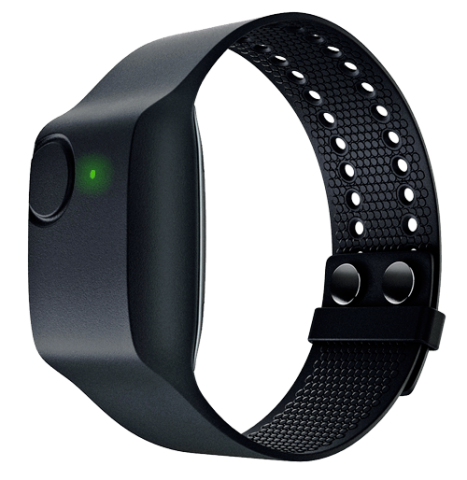
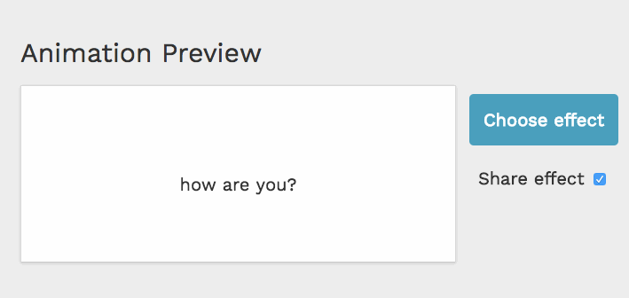
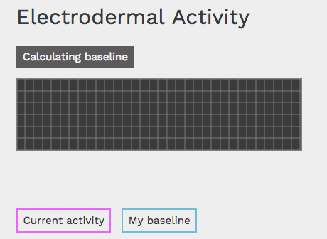
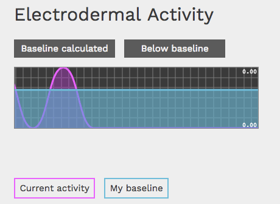
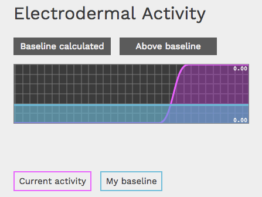
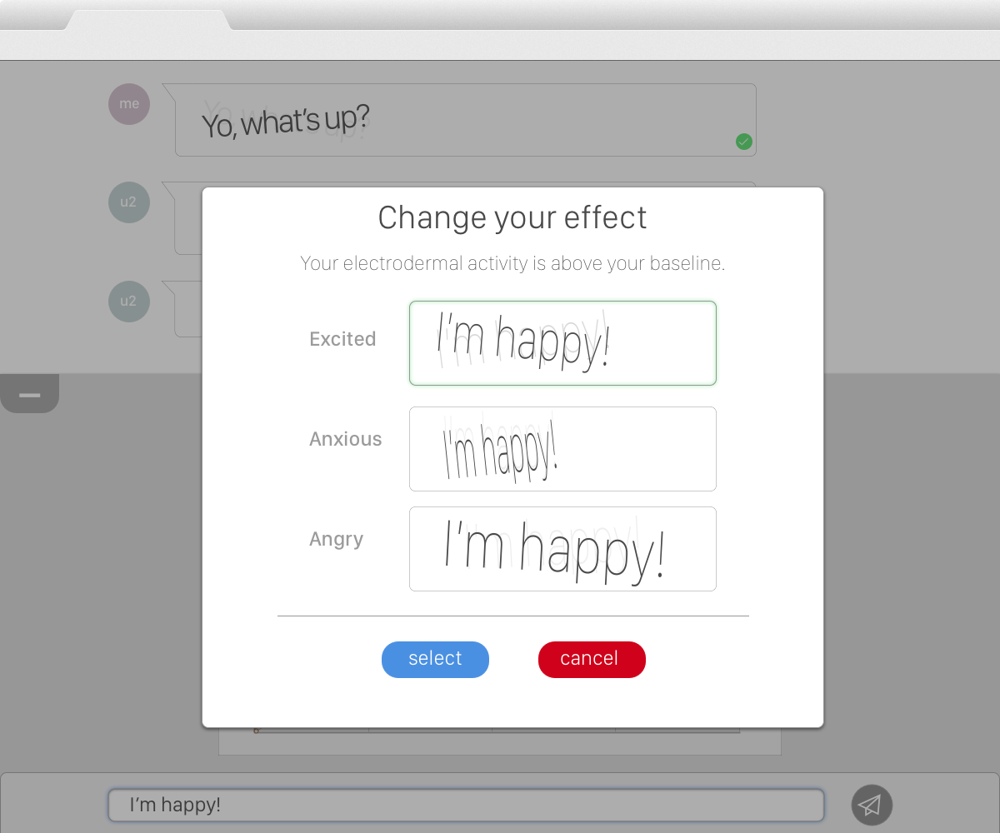
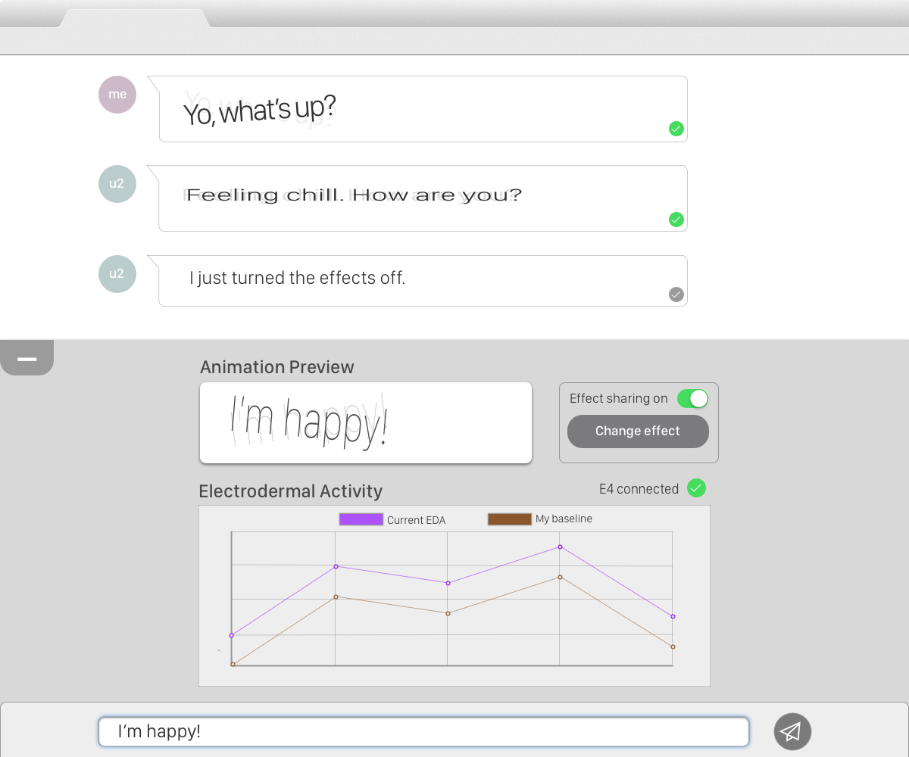

--- 
permalink: biofeedback-chat
image: img/cover/sad-goog.gif
subtitle: "Diversity in Film 2017"
title: "Super Sad Googles"
---

{% include nav.html %}
<div class="container post">

    <!-- Portfolio Item Heading -->
    <div class="row">
        <div class="col-lg-12">
            <h1> Expressive Biofeedback Chat
                  <br>   
                   <br>
                </h1>
        </div>
    </div>
    <!-- /.row -->

    <!-- Portfolio Item Row -->
    <div class="row">

        <div class="col-md-8">
            
        </div>

        <div class="col-md-4 overview post-cover">
            <h3>Overview</h3>
            <p>I designed and carried out a pilot study exploring sharing animations based on biofeedback from a wristband sensor advised by Professor Geoffrey Kaufmann & PhD Candidate Fannie Liu as an independent study.</p>
            <ul>
                <h3>Project Details</h3>
                <h2>Tools</h2>
                <p>Sketch, HTML, CSS animations, Bootstrap, Node.js, Socket.io, Smoothie.js, Empatica Android SDK</p>
                <h2>Methods</h2>
                <p>Sketching, research planning, interview protocol design, interviewing, qualitative coding</p>
            </ul>
        </div>

    </div>
    <!-- Portfolio Item Detail -->
    <div class="row">
        <div class="col-lg-12">
            <h3>Deliverables</h3>
               <p>
                I wrote up my process and findings for this pilot study in a final report for researchers at the eHeart Lab and Oh!Lab in Carnegie Mellon's Human-Computer Interaction Institute here: <a href="../Pilot%20Study%20Sharing%20Electrodermal%20Biofeedback%20with%20Customizable%20Kinetic%20Type%20.pdf">Pilot Study: Sharing Electrodermal Biofeedback with Customizable Kinetic Type</a>.</p> 
                <p>I also documented the chat code, which is available on <a href="https://github.com/Saltzshaker/bio-kinetic-typography-chat">Github with README for setup with two participants</a>.
            </p>

        </div>
    </div>
    <div class="row">
        <div class="col-lg-8">
            <h3>Background</h3>
            <p>
                Expressive biofeedback is the use of physiological data to influence social interactions. In this pilot study, I explored questions of trust, comfort, and expression, with regards to sharing biofeedback data through messages with kinetic typography in a web chat. Using electrodermal activity from the Empatica E4 wristband sensor, six participants monitored their baseline and current electrodermal activity in a chat interface while chatting with a confederate participant who asked emotionally charged questions of a variety of valences.
            </p>
            <p>The pilot set out to explore four central questions:</p>
            <ol>
                <li>Are people comfortable sharing messages with biofeedback data?</li>
                <li>Do people want control over how their biofeedback data is presented to others?</li>
                <li>How do people understand the biofeedback data, as shown through data</li>
                <li>Do people trust that their biofeedback data is accurate?</li>
            </ol>
        </div>
        <div class="col-lg-4">
            
            <figcaption style="text-align: center;" class="figcaption">Empatica E4 wristband sensor</figcaption>
        </div>
    </div>

    <div class="row">
        <div class="col-lg-8">
            <h3>How the chat works</h3>
            <p>This project built directly on Raina Langevin’s work for the project <a href="https://drive.google.com/file/d/0B2esDnMdnTGLRDlkUGtXSndPcWc/view?usp=sharing">Understanding Perceptions of Expressive Biofeedback and Implementing it into a Kinetic Instant Messenger</a>, which created several text animations corresponding to a variety of biofeedback. In the chat implementation which I built for this pilot study, I finished implementing the two-way chat and added animations into an effect library.</p>
            <p>Each participant could choose from a library of text animation effects. As the participants typed, a preview box displayed an animation of their text with a fast or slow speed, as determined by whether the participant was above or below their baseline. While the participant could not control the animation speed, which was determined by their physiological data, they could control the animation style of the effect. In addition to choosing their effect, the participant could also choose whether or not to share with the other person in the chat. Each participant chatted with the experimenter, whose sharing settings were off, and answered a series of positive emotional, negative emotional, and neutral questions.  </p>
            <p>After sitting with the participant to calculate a baseline of activity, the participant could view a streaming chart of their electrodermal activity, and its status above or below a pre-calculated baseline, at any point during the pilot experiment.</p>
        </div>
        <div class="col-lg-4">
                      
            <figcaption class="figcaption">Faster text above the participant's baseline</figcaption>
            
            <figcaption class="figcaption">Slower text below the participant's baseline</figcaption>

        </div>
    </div>
<div class="row">
        <div class="col-lg-4">
          
          <figcaption class="figcaption">Baseline being calculated</figcaption>
          </div>
                    <div class="col-lg-4">
          
          <figcaption class="figcaption">Movement below the baseline (dummy data)</figcaption>
          </div>
          <div class="col-lg-4">
          
          <figcaption class="figcaption">Above the baseline (dummy data)</figcaption>
    </div>
          </div>

    <!-- Portfolio Item Detail -->

    <!-- Portfolio Item Detail -->
    <div class="row">
        <div class="col-lg-12">
            <h3>Design Process</h3>
            <p>
                After reviewing the finding and codebase for Raina Langevin’s previous kinetic typography work, I sketched out several feature design directions on paper and using Sketch before building on the working prototype with the existing CSS animations. In particular, I explored how sharing settings could be toggled, and considered surfacing animation categories to the participants.
            </p>
        </div>
        <div class="col-lg-6">
        
        
        <figcaption class="figcaption">Animation effect categories</figcaption>
        </div>
        <div class="col-lg-6"><figcaption class="figcaption">Effect sharing toggle button</figcaption>
        </div>
        
        <div class="col-lg-12">
        <br>
        <br>
        <p>After several rounds of critique to tie designs back to our research goals, as well checking them for technical feasibility, I moved forward to development and research planning for the final pilot design. The testing process and findings are documented in my final report: <a href="../Pilot%20Study%20Sharing%20Electrodermal%20Biofeedback%20with%20Customizable%20Kinetic%20Type%20.pdf">Pilot Study: Sharing Electrodermal Biofeedback with Customizable Kinetic Type</a>.</p>
        </div>
    </div>